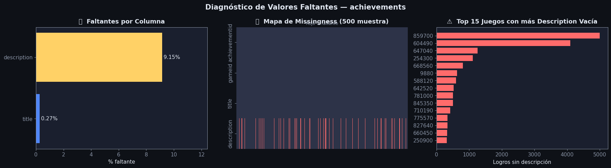
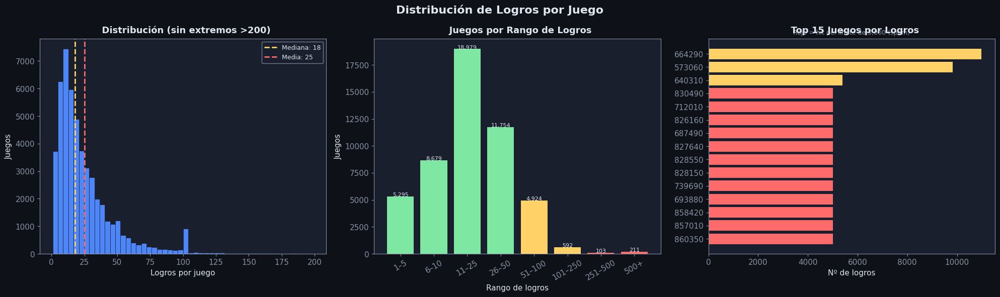
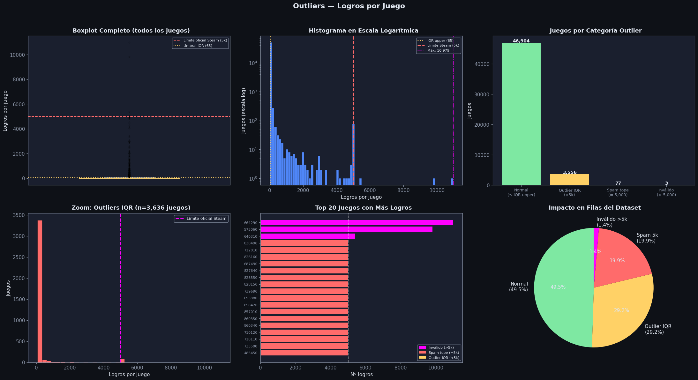
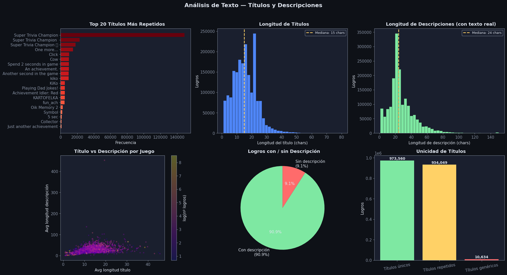
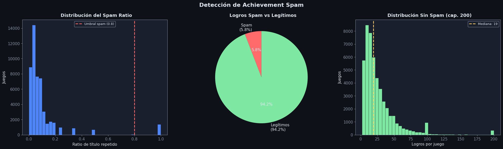

EDA: achievements#
Descripción: Logros (achievements) disponibles en cada juego de Steam.
Columna |
Tipo |
Descripción |
|---|---|---|
|
str |
ID único: |
|
float |
ID del juego al que pertenece el logro |
|
str |
Nombre del logro |
|
str |
Descripción de cómo desbloquear el logro |
Imports y configuración#
import pandas as pd
import numpy as np
import matplotlib.pyplot as plt
import matplotlib.ticker as mticker
import seaborn as sns
import re
import warnings
warnings.filterwarnings('ignore')
DARK_BG = '#0e1117'
CARD_BG = '#1a1f2e'
ACCENT1 = '#4f86f7'
ACCENT2 = '#7ee8a2'
ACCENT3 = '#ff6b6b'
ACCENT4 = '#ffd166'
TEXT = '#e0e6f0'
MUTED = '#8892a4'
plt.rcParams.update({
'figure.facecolor': DARK_BG, 'axes.facecolor': CARD_BG,
'axes.edgecolor': MUTED, 'axes.labelcolor': TEXT,
'xtick.color': MUTED, 'ytick.color': MUTED,
'text.color': TEXT, 'grid.color': '#2d3348',
'grid.alpha': 0.6, 'font.family': 'DejaVu Sans',
'font.size': 11,
})
def title_ax(ax, txt, sub=None):
ax.set_title(txt, fontsize=13, fontweight='bold', color=TEXT, pad=8)
if sub:
ax.text(0.5, 1.02, sub, transform=ax.transAxes,
ha='center', fontsize=9, color=MUTED)
Carga y exploración inicial#
df_raw = pd.read_csv('Datos/achievements.csv')
print(f"Shape: {df_raw.shape[0]:,} filas × {df_raw.shape[1]} columnas")
df_raw.head(5)
Shape: 1,939,027 filas × 4 columnas
| achievementid | gameid | title | description | |
|---|---|---|---|---|
| 0 | 2621440_ACH_FIRST_KILL | 2621440 | FIRST KILL | You should kill ONE enemy. |
| 1 | 2621440_ACH_0_LEVEL_COMPLETED | 2621440 | TUTORIAL COMPLETED | You should complete tutorial. |
| 2 | 2621440_ACH_1_LEVEL_COMPLETED | 2621440 | FIRST LEVEL | You should complete first level |
| 3 | 2621440_ACH_2_LEVEL_COMPLETED | 2621440 | SECOND LEVEL | You should complete second level |
| 4 | 2621440_ACH_3_LEVEL_COMPLETED | 2621440 | THIRD LEVEL | You should complete third level |
print(df_raw.dtypes)
print()
df_raw.describe(include='all')
achievementid object
gameid int64
title object
description object
dtype: object
| achievementid | gameid | title | description | |
|---|---|---|---|---|
| count | 1939027 | 1.939027e+06 | 1934556 | 1766815 |
| unique | 1939027 | NaN | 983204 | 1063798 |
| top | 3399670_END | NaN | Super Trivia Champion | Super Trivia Champion |
| freq | 1 | NaN | 148999 | 148999 |
| mean | NaN | 1.194505e+06 | NaN | NaN |
| std | NaN | 7.509441e+05 | NaN | NaN |
| min | NaN | 2.200000e+02 | NaN | NaN |
| 25% | NaN | 6.902400e+05 | NaN | NaN |
| 50% | NaN | 8.570600e+05 | NaN | NaN |
| 75% | NaN | 1.655550e+06 | NaN | NaN |
| max | NaN | 3.425420e+06 | NaN | NaN |
Análisis y tratamiento de valores faltantes#
Razonamiento#
Un logro sin
titleno tiene nombre visible en Steam es un registro corrupto o placeholder. Al ser <0.1%, se elimina sin pérdida significativa.La
descriptionvacía es un patrón habitual en Steam: muchos desarrolladores registran logros sin texto explicativo. Imputar con'No description'preserva el registro y permite análisis de texto posteriores sin errores.
missing = df_raw.isnull() | (df_raw.apply(lambda col: col.astype(str).str.strip() == ''))
miss_pct = (missing.mean() * 100).round(2)
miss_cnt = missing.sum()
print("Faltantes por columna:")
pd.DataFrame({'count': miss_cnt, 'pct (%)': miss_pct}).sort_values('pct (%)', ascending=False)
Faltantes por columna:
| count | pct (%) | |
|---|---|---|
| description | 177487 | 9.15 |
| title | 5224 | 0.27 |
| gameid | 0 | 0.00 |
| achievementid | 0 | 0.00 |
fig, axes = plt.subplots(1, 3, figsize=(18, 5))
fig.patch.set_facecolor(DARK_BG)
fig.suptitle('Diagnóstico de Valores Faltantes — achievements', fontsize=15,
fontweight='bold', color=TEXT)
ax = axes[0]
cols_m = miss_pct[miss_pct > 0].sort_values()
colors_m = [ACCENT3 if v > 30 else ACCENT4 if v > 5 else ACCENT1 for v in cols_m.values]
bars = ax.barh(cols_m.index, cols_m.values, color=colors_m)
for bar, val in zip(bars, cols_m.values):
ax.text(val + 0.1, bar.get_y() + bar.get_height()/2,
f'{val:.2f}%', va='center', color=TEXT, fontsize=11)
ax.set_xlim(0, max(cols_m.values) * 1.25 + 1)
ax.set_xlabel('% faltante')
title_ax(ax, '🔍 Faltantes por Columna')
ax = axes[1]
sample = df_raw.sample(min(500, len(df_raw)), random_state=42)
miss_m = sample.isnull() | (sample.apply(lambda col: col.astype(str).str.strip() == ''))
sns.heatmap(miss_m.T, ax=ax, cbar=False,
cmap=['#2d3348', ACCENT3], yticklabels=True, xticklabels=False)
title_ax(ax, '🗺️ Mapa de Missingness (500 muestra)', 'Rojo = faltante')
ax = axes[2]
desc_missing = df_raw[df_raw['description'].isnull() | (df_raw['description'].str.strip() == '')]
games_with_missing = desc_missing.groupby('gameid').size().sort_values(ascending=False)
top_missing = games_with_missing.head(15)
ax.barh(top_missing.index.astype(str)[::-1], top_missing.values[::-1], color=ACCENT3)
ax.set_xlabel('Logros sin descripción')
title_ax(ax, '⚠️ Top 15 Juegos con más Description Vacía')
plt.tight_layout()
plt.show()

df = df_raw.copy()
before = len(df)
df = df[df['title'].notna() & (df['title'].str.strip() != '')].reset_index(drop=True)
print(f"Eliminadas por title vacío: {before - len(df):,} filas")
mask_desc = df['description'].isna() | (df['description'].str.strip() == '')
df['description'] = df['description'].fillna('No description')
df.loc[df['description'].str.strip() == '', 'description'] = 'No description'
print(f"Description imputada: {mask_desc.sum():,} filas → 'No description'")
df['gameid'] = df['gameid'].astype(int)
GENERIC_TITLES = [
'an achievement.', 'community achievement',
'this is an achievement.', 'achievement'
]
df['is_generic'] = df['title'].str.lower().str.strip().isin(GENERIC_TITLES)
print(f"\nDataset final: {len(df):,} filas")
print(f"Faltantes restantes: {df.isnull().sum().sum()}")
df.head(3)
Eliminadas por title vacío: 5,224 filas
Description imputada: 173,173 filas → 'No description'
Dataset final: 1,933,803 filas
Faltantes restantes: 0
| achievementid | gameid | title | description | is_generic | |
|---|---|---|---|---|---|
| 0 | 2621440_ACH_FIRST_KILL | 2621440 | FIRST KILL | You should kill ONE enemy. | False |
| 1 | 2621440_ACH_0_LEVEL_COMPLETED | 2621440 | TUTORIAL COMPLETED | You should complete tutorial. | False |
| 2 | 2621440_ACH_1_LEVEL_COMPLETED | 2621440 | FIRST LEVEL | You should complete first level | False |
Estructura del achievementid y validación de integridad#
El campo
achievementidsigue el patrón{gameid}_{codigo}, lo que permite extraer elgameiddirectamente del ID y validar consistencia con la columnagameid.No hay
achievementidduplicados, lo que confirma que es una clave primaria confiable.El código del logro (sufijo) tiene alta variabilidad: algunos juegos usan nombres descriptivos (
ACH_FIRST_KILL), otros usan índices numéricos (ACH_00001).
df['ach_gameid_prefix'] = df['achievementid'].str.split('_').str[0]
df['ach_code'] = df['achievementid'].str.split('_', n=1).str[1]
mismatch = df[df['ach_gameid_prefix'] != df['gameid'].astype(str)]
print(f"achievementid con prefijo != gameid : {len(mismatch):,}")
print(f"achievementid duplicados : {df['achievementid'].duplicated().sum():,}")
print(f"Juegos únicos : {df['gameid'].nunique():,}")
print(f"Logros totales : {len(df):,}")
if len(mismatch) > 0:
print("\nRegistros con mismatch:")
print(mismatch[['achievementid', 'gameid', 'title']].head())
achievementid con prefijo != gameid : 0
achievementid duplicados : 0
Juegos únicos : 50,540
Logros totales : 1,933,803
Distribución de Logros por Juego#
Hallazgos#
La distribución es fuertemente sesgada a la derecha: la mediana es 18 logros por juego, mientras que el promedio es 38, lo que indica que unos pocos juegos con muchos logros elevan la media.
El 75% de los juegos tiene 32 logros o menos, lo que representa un diseño de logros razonable y consistente con la mayoría de juegos comerciales.
Existe una cola larga hacia valores altos: el 1% superior supera los 152 logros, mostrando que algunos juegos incluyen sistemas de logros muy extensos.
Se detectan 77 juegos con exactamente 5,000 logros, un valor sospechoso porque 5,000 es el límite impuesto por Steam. Alcanzar ese límite exacto suele asociarse con prácticas de achievement spam, donde se generan miles de logros triviales para inflar el conteo visible en el perfil del jugador.
El valor máximo observado es 10,979 logros, muy por encima del límite estándar. Esto sugiere posibles errores de datos, agregación de múltiples versiones del juego o inconsistencias en el scraping del dataset.
También existe una cola de juegos con muy pocos logros: 1,241 juegos tienen solo 1 logro, típicamente demos, juegos muy pequeños o títulos experimentales.
per_game = df.groupby('gameid').size().rename('n_achievements')
print("Estadísticas de logros por juego:")
print(per_game.describe(percentiles=[.25, .5, .75, .90, .95, .99]))
print(f"\nJuegos con exactamente 5,000 logros (spam): {(per_game == 5000).sum():,}")
print(f"Juegos con 1 solo logro : {(per_game == 1).sum():,}")
Estadísticas de logros por juego:
count 50540.000000
mean 38.262822
std 230.239123
min 1.000000
25% 10.000000
50% 18.000000
75% 32.000000
90% 54.000000
95% 80.000000
99% 152.000000
max 10979.000000
Name: n_achievements, dtype: float64
Juegos con exactamente 5,000 logros (spam): 77
Juegos con 1 solo logro : 1,241
fig, axes = plt.subplots(1, 3, figsize=(20, 6))
fig.patch.set_facecolor(DARK_BG)
fig.suptitle('Distribución de Logros por Juego', fontsize=16, fontweight='bold', color=TEXT)
ax = axes[0]
cap = per_game[per_game < 200]
ax.hist(cap, bins=50, color=ACCENT1, edgecolor=DARK_BG, linewidth=0.4)
ax.axvline(cap.median(), color=ACCENT4, linewidth=2, linestyle='--',
label=f'Mediana: {cap.median():.0f}')
ax.axvline(cap.mean(), color=ACCENT3, linewidth=2, linestyle='--',
label=f'Media: {cap.mean():.0f}')
ax.legend(fontsize=9, facecolor=CARD_BG, edgecolor=MUTED, labelcolor=TEXT)
ax.set_xlabel('Logros por juego'); ax.set_ylabel('Juegos')
title_ax(ax, ' Distribución (sin extremos >200)')
ax = axes[1]
bins = [0, 5, 10, 25, 50, 100, 250, 500, 5001]
labels = ['1–5','6–10','11–25','26–50','51–100','101–250','251–500','500+']
pg_df = per_game.reset_index()
pg_df['bucket'] = pd.cut(pg_df['n_achievements'], bins=bins, labels=labels)
bucket_counts = pg_df['bucket'].value_counts().sort_index()
colors_b = [ACCENT2 if i < 4 else ACCENT4 if i < 6 else ACCENT3 for i in range(len(bucket_counts))]
ax.bar(bucket_counts.index.astype(str), bucket_counts.values, color=colors_b)
for i, v in enumerate(bucket_counts.values):
ax.text(i, v + 20, f'{v:,}', ha='center', fontsize=8, color=TEXT)
ax.set_xlabel('Rango de logros'); ax.set_ylabel('Juegos')
ax.tick_params(axis='x', rotation=30)
title_ax(ax, ' Juegos por Rango de Logros')
ax = axes[2]
top15 = per_game.sort_values(ascending=False).head(15)
colors_t = [ACCENT3 if v == 5000 else ACCENT4 for v in top15.values]
ax.barh(top15.index.astype(str)[::-1], top15.values[::-1], color=colors_t[::-1])
ax.set_xlabel('Nº de logros')
title_ax(ax, ' Top 15 Juegos por Logros', 'Rojo = hit del límite de 5,000 (spam)')
plt.tight_layout()
plt.show()

Outliers: Juegos con Cantidad Extrema de Logros#
La sección anterior reveló que el máximo de logros por juego supera los 10,000, y que Steam impone un límite oficial de 5,000. Esto significa que los valores más extremos son anomalías reales registros que exceden incluso las prácticas de spam convencional.
Enfoque del análisis#
Se utilizan dos métodos complementarios para detectar outliers:
IQR (Rango Intercuartílico): método robusto, no sensible a la cola extrema. Umbral = Q3 + 1.5 × IQR.
Percentil 99: criterio práctico para separar el 1% superior del universo de juegos.
Además, se segmentan los outliers en tres categorías:
> 5,000 logros → Viola el límite oficial de Steam. Probablemente errores de ingesta o duplicados.
= 5,000 logros → Tope exacto. Casi siempre achievement spam deliberado.
Outlier IQR pero < 5,000 → Casos elevados pero posiblemente legítimos (franquicias grandes, DLC incluidos).
per_game = df.groupby('gameid').size().rename('n_achievements')
Q1, Q3 = per_game.quantile(0.25), per_game.quantile(0.75)
IQR = Q3 - Q1
iqr_upper = Q3 + 1.5 * IQR
p99 = per_game.quantile(0.99)
mask_above_5k = per_game > 5000
mask_exact_5k = per_game == 5000
mask_iqr_out = (per_game > iqr_upper) & (per_game < 5000)
mask_normal = per_game <= iqr_upper
print(f"Q1={Q1:.0f} Q3={Q3:.0f} IQR={IQR:.0f}")
print(f"Umbral IQR (Q3 + 1.5×IQR) : {iqr_upper:.0f} logros")
print(f"Percentil 99 : {p99:.0f} logros")
print(f"Máximo observado : {per_game.max():,} logros")
print()
print(f"Juegos con > 5,000 logros (inválidos) : {mask_above_5k.sum():,}")
print(f"Juegos con = 5,000 logros (spam tope) : {mask_exact_5k.sum():,}")
print(f"Outliers IQR moderados (< 5,000) : {mask_iqr_out.sum():,}")
print(f"Juegos dentro del rango normal : {mask_normal.sum():,}")
print()
print("Top 20 juegos con más logros:")
per_game.sort_values(ascending=False).head(20).to_frame().assign(
categoria=lambda x: x['n_achievements'].map(
lambda v: '🔴 Inválido (>5k)' if v > 5000 else
'🟠 Spam tope (5k)' if v == 5000 else
'🟡 Outlier IQR' if v > iqr_upper else '🟢 Normal'
)
)
Q1=10 Q3=32 IQR=22
Umbral IQR (Q3 + 1.5×IQR) : 65 logros
Percentil 99 : 152 logros
Máximo observado : 10,979 logros
Juegos con > 5,000 logros (inválidos) : 3
Juegos con = 5,000 logros (spam tope) : 77
Outliers IQR moderados (< 5,000) : 3,556
Juegos dentro del rango normal : 46,904
Top 20 juegos con más logros:
| n_achievements | categoria | |
|---|---|---|
| gameid | ||
| 664290 | 10979 | 🔴 Inválido (>5k) |
| 573060 | 9821 | 🔴 Inválido (>5k) |
| 640310 | 5394 | 🔴 Inválido (>5k) |
| 830490 | 5000 | 🟠 Spam tope (5k) |
| 712010 | 5000 | 🟠 Spam tope (5k) |
| 826160 | 5000 | 🟠 Spam tope (5k) |
| 687490 | 5000 | 🟠 Spam tope (5k) |
| 827640 | 5000 | 🟠 Spam tope (5k) |
| 828550 | 5000 | 🟠 Spam tope (5k) |
| 828150 | 5000 | 🟠 Spam tope (5k) |
| 739690 | 5000 | 🟠 Spam tope (5k) |
| 693880 | 5000 | 🟠 Spam tope (5k) |
| 858420 | 5000 | 🟠 Spam tope (5k) |
| 857010 | 5000 | 🟠 Spam tope (5k) |
| 860350 | 5000 | 🟠 Spam tope (5k) |
| 860340 | 5000 | 🟠 Spam tope (5k) |
| 710120 | 5000 | 🟠 Spam tope (5k) |
| 710110 | 5000 | 🟠 Spam tope (5k) |
| 733500 | 5000 | 🟠 Spam tope (5k) |
| 485450 | 5000 | 🟠 Spam tope (5k) |
fig, axes = plt.subplots(2, 3, figsize=(22, 12))
fig.patch.set_facecolor(DARK_BG)
fig.suptitle('Outliers — Logros por Juego', fontsize=16, fontweight='bold', color=TEXT, y=0.99)
ax = axes[0, 0]
bp = ax.boxplot(per_game.values, vert=True, patch_artist=True, widths=0.5,
boxprops=dict(facecolor=ACCENT1, color=MUTED),
medianprops=dict(color=ACCENT4, linewidth=2),
whiskerprops=dict(color=MUTED), capprops=dict(color=MUTED),
flierprops=dict(marker='o', color=ACCENT3, alpha=0.3, markersize=3))
ax.axhline(5000, color=ACCENT3, linestyle='--', linewidth=1.5, label='Límite oficial Steam (5k)')
ax.axhline(iqr_upper, color=ACCENT4, linestyle=':', linewidth=1.5, label=f'Umbral IQR ({iqr_upper:.0f})')
ax.legend(fontsize=8, facecolor=CARD_BG, edgecolor=MUTED, labelcolor=TEXT)
ax.set_ylabel('Logros por juego')
ax.set_xticks([])
title_ax(ax, ' Boxplot Completo (todos los juegos)')
ax = axes[0, 1]
ax.hist(per_game.values, bins=80, color=ACCENT1, edgecolor=DARK_BG, linewidth=0.3, log=True)
ax.axvline(iqr_upper, color=ACCENT4, linewidth=2, linestyle=':', label=f'IQR upper ({iqr_upper:.0f})')
ax.axvline(5000, color=ACCENT3, linewidth=2, linestyle='--', label='Límite Steam (5k)')
ax.axvline(per_game.max(), color='#ff00ff', linewidth=1.5, linestyle='-.',
label=f'Máx: {per_game.max():,}')
ax.legend(fontsize=8, facecolor=CARD_BG, edgecolor=MUTED, labelcolor=TEXT)
ax.set_xlabel('Logros por juego'); ax.set_ylabel('Juegos (escala log)')
title_ax(ax, ' Histograma en Escala Logarítmica')
ax = axes[0, 2]
cats = {
'Normal\n(≤ IQR upper)': mask_normal.sum(),
f'Outlier IQR\n(<5k)': mask_iqr_out.sum(),
'Spam tope\n(= 5,000)': mask_exact_5k.sum(),
'Inválido\n(> 5,000)': mask_above_5k.sum(),
}
bar_colors = [ACCENT2, ACCENT4, ACCENT3, '#ff00ff']
bars = ax.bar(list(cats.keys()), list(cats.values()), color=bar_colors)
for bar, val in zip(bars, cats.values()):
ax.text(bar.get_x() + bar.get_width()/2, bar.get_height() + per_game.shape[0]*0.003,
f'{val:,}', ha='center', fontsize=10, color=TEXT, fontweight='bold')
ax.set_ylabel('Juegos')
ax.tick_params(axis='x', labelsize=9)
title_ax(ax, ' Juegos por Categoría Outlier')
ax = axes[1, 0]
outliers_only = per_game[per_game > iqr_upper]
ax.hist(outliers_only.values, bins=40, color=ACCENT3, edgecolor=DARK_BG, linewidth=0.4)
ax.axvline(5000, color='#ff00ff', linewidth=2, linestyle='--', label='Límite oficial Steam')
ax.legend(fontsize=9, facecolor=CARD_BG, edgecolor=MUTED, labelcolor=TEXT)
ax.set_xlabel('Logros por juego'); ax.set_ylabel('Juegos')
title_ax(ax, f' Zoom: Outliers IQR (n={len(outliers_only):,} juegos)')
ax = axes[1, 1]
top20 = per_game.sort_values(ascending=False).head(20)
c_top = ['#ff00ff' if v > 5000 else ACCENT3 if v == 5000 else ACCENT4 for v in top20.values]
ax.barh(range(len(top20)), top20.values[::-1], color=c_top[::-1])
ax.set_yticks(range(len(top20)))
ax.set_yticklabels([str(g) for g in top20.index[::-1]], fontsize=8)
ax.axvline(5000, color='white', linewidth=1.5, linestyle='--', alpha=0.5)
ax.set_xlabel('Nº logros')
from matplotlib.patches import Patch
legend_elements = [
Patch(facecolor='#ff00ff', label='Inválido (>5k)'),
Patch(facecolor=ACCENT3, label='Spam tope (=5k)'),
Patch(facecolor=ACCENT4, label='Outlier IQR (<5k)'),
]
ax.legend(handles=legend_elements, fontsize=8, facecolor=CARD_BG, edgecolor=MUTED, labelcolor=TEXT)
title_ax(ax, ' Top 20 Juegos con Más Logros')
ax = axes[1, 2]
rows_normal = df[df['gameid'].isin(per_game[mask_normal].index)].shape[0]
rows_iqr_out = df[df['gameid'].isin(per_game[mask_iqr_out].index)].shape[0]
rows_spam5k = df[df['gameid'].isin(per_game[mask_exact_5k].index)].shape[0]
rows_inv = df[df['gameid'].isin(per_game[mask_above_5k].index)].shape[0]
total = len(df)
wedge_sizes = [rows_normal, rows_iqr_out, rows_spam5k, rows_inv]
wedge_labels = [
f'Normal\n({rows_normal/total*100:.1f}%)',
f'Outlier IQR\n({rows_iqr_out/total*100:.1f}%)',
f'Spam 5k\n({rows_spam5k/total*100:.1f}%)',
f'Inválido >5k\n({rows_inv/total*100:.1f}%)',
]
ax.pie([w for w in wedge_sizes if w > 0],
labels=[l for l, w in zip(wedge_labels, wedge_sizes) if w > 0],
colors=[c for c, w in zip([ACCENT2, ACCENT4, ACCENT3, '#ff00ff'], wedge_sizes) if w > 0],
startangle=90, textprops={'color': TEXT}, autopct='%1.1f%%')
title_ax(ax, ' Impacto en Filas del Dataset')
plt.tight_layout(rect=[0, 0, 1, 0.97])
plt.show()

Después de revisar personalmente estos 3 juegos con más de 5.000 logros, sí es cierto que tienen esa cantidad exhorbitante. Sin embargo, hemos decidido borrarlos para no afectar el análisis.
per_game = df.groupby("gameid").size().rename("n_achievements")
Q1_o, Q3_o = per_game.quantile(0.25), per_game.quantile(0.75)
iqr_upper_o = Q3_o + 1.5 * (Q3_o - Q1_o)
def categorize_game(n):
if n > 5000: return "invalido"
elif n == 5000: return "spam_tope"
elif n > iqr_upper_o: return "outlier_iqr"
return "normal"
game_cat = per_game.map(categorize_game).rename("outlier_cat").reset_index()
df = df.merge(game_cat, on="gameid", how="left")
invalid_game_ids = per_game[per_game > 5000].index
df = df[~df["gameid"].isin(invalid_game_ids)].copy()
n_cat = df["outlier_cat"].value_counts()
print("outlier_cat en df:")
print(n_cat)
print(f"Df tras eliminar inválidos: {len(df):,} filas")
outlier_cat en df:
outlier_cat
normal 957413
outlier_iqr 565196
spam_tope 385000
Name: count, dtype: int64
Df tras eliminar inválidos: 1,907,609 filas
Análisis de Texto: Títulos y Descripciones#
Los títulos de logros son muy cortos y consistentes, con una media cercana a 15 caracteres. La mitad de los títulos se encuentra entre 9 y 21 caracteres, lo que indica que suelen ser frases breves y directas.
Las descripciones son ligeramente más largas (media ≈ 27 caracteres) y generalmente explican la condición para desbloquear el logro, por ejemplo: “Kill 100 enemies” o “Complete chapter 3”.
Se detectan valores extremos (títulos de hasta 2,196 caracteres y descripciones de 1,660), que probablemente corresponden a errores de formato o registros atípicos.
Se identificaron 10,634 logros con títulos genéricos (
0.56%del dataset), como “This is an achievement” o “Community achievement”, los cuales aportan poca información semántica.Algunos títulos aparecen decenas de miles de veces (ej. “Super Trivia Champion”), lo que sugiere la presencia de juegos con generación masiva de logros (achievement spam).
df['title_len'] = df['title'].str.len()
df['desc_len'] = df['description'].str.len()
print("Longitud de títulos:")
print(df['title_len'].describe())
print("\nLongitud de descripciones:")
print(df['desc_len'].describe())
print(f"\nLogros con título genérico (is_generic=True): {df['is_generic'].sum():,} ({df['is_generic'].mean()*100:.2f}%)")
Longitud de títulos:
count 1.907609e+06
mean 1.525122e+01
std 8.630370e+00
min 1.000000e+00
25% 9.000000e+00
50% 1.500000e+01
75% 2.100000e+01
max 2.196000e+03
Name: title_len, dtype: float64
Longitud de descripciones:
count 1.907609e+06
mean 2.672150e+01
std 1.845247e+01
min 1.000000e+00
25% 1.500000e+01
50% 2.300000e+01
75% 3.300000e+01
max 1.660000e+03
Name: desc_len, dtype: float64
Logros con título genérico (is_generic=True): 10,634 (0.56%)
fig, axes = plt.subplots(2, 3, figsize=(20, 11))
fig.patch.set_facecolor(DARK_BG)
fig.suptitle('Análisis de Texto — Títulos y Descripciones', fontsize=16, fontweight='bold', color=TEXT, y=0.98)
ax = axes[0, 0]
top_titles = df['title'].value_counts().head(20)
cmap = plt.cm.Reds(np.linspace(0.4, 1.0, len(top_titles)))
ax.barh(top_titles.index[::-1], top_titles.values[::-1], color=cmap)
ax.set_xlabel('Frecuencia')
title_ax(ax, ' Top 20 Títulos Más Repetidos')
ax = axes[0, 1]
ax.hist(df['title_len'].clip(upper=80), bins=40, color=ACCENT1,
edgecolor=DARK_BG, linewidth=0.4)
ax.axvline(df['title_len'].median(), color=ACCENT4, linewidth=2,
linestyle='--', label=f"Mediana: {df['title_len'].median():.0f} chars")
ax.legend(fontsize=9, facecolor=CARD_BG, edgecolor=MUTED, labelcolor=TEXT)
ax.set_xlabel('Longitud del título (chars)'); ax.set_ylabel('Logros')
title_ax(ax, ' Longitud de Títulos')
ax = axes[0, 2]
no_desc = (df['description'] == 'No description').sum()
has_desc = df[df['description'] != 'No description']
ax.hist(has_desc['desc_len'].clip(upper=150), bins=40, color=ACCENT2,
edgecolor=DARK_BG, linewidth=0.4)
ax.axvline(has_desc['desc_len'].median(), color=ACCENT4, linewidth=2,
linestyle='--', label=f"Mediana: {has_desc['desc_len'].median():.0f} chars")
ax.legend(fontsize=9, facecolor=CARD_BG, edgecolor=MUTED, labelcolor=TEXT)
ax.set_xlabel('Longitud de descripción (chars)'); ax.set_ylabel('Logros')
title_ax(ax, ' Longitud de Descripciones (con texto real)')
ax = axes[1, 0]
sample_games = df.groupby('gameid').agg(
avg_title_len=('title_len','mean'),
avg_desc_len=('desc_len','mean'),
n_ach=('achievementid','count')
).sample(min(3000, df['gameid'].nunique()), random_state=42)
sc = ax.scatter(sample_games['avg_title_len'], sample_games['avg_desc_len'],
alpha=0.3, s=8, c=np.log1p(sample_games['n_ach']), cmap='plasma')
plt.colorbar(sc, ax=ax, label='log(nº logros)')
ax.set_xlabel('Avg longitud título'); ax.set_ylabel('Avg longitud descripción')
title_ax(ax, ' Título vs Descripción por Juego')
ax = axes[1, 1]
real_desc = (df['description'] != 'No description').sum()
ax.pie([real_desc, no_desc],
labels=[f'Con descripción\n({real_desc/len(df)*100:.1f}%)',
f'Sin descripción\n({no_desc/len(df)*100:.1f}%)'],
colors=[ACCENT2, ACCENT3], startangle=90,
textprops={'color': TEXT}, autopct='%1.1f%%')
title_ax(ax, ' Logros con / sin Descripción')
ax = axes[1, 2]
unique_titles = df['title'].nunique()
total_titles = len(df)
repeated = total_titles - unique_titles
generic_n = df['is_generic'].sum()
bars_lbl = ['Títulos únicos', 'Títulos repetidos', 'Títulos genéricos']
bars_val = [unique_titles, repeated, generic_n]
ax.bar(bars_lbl, bars_val, color=[ACCENT2, ACCENT4, ACCENT3])
for i, v in enumerate(bars_val):
ax.text(i, v + total_titles*0.005, f'{v:,}', ha='center', fontsize=10,
color=TEXT, fontweight='bold')
ax.set_ylabel('Logros')
ax.tick_params(axis='x', rotation=10)
title_ax(ax, ' Unicidad de Títulos')
plt.tight_layout(rect=[0, 0, 1, 0.96])
plt.show()

Detección de Achievement Spam#
Se observa achievement spam en algunos juegos: títulos que contienen muchos logros con nombres repetidos o casi idénticos, práctica asociada con inflar artificialmente los contadores de logros en Steam.
Se define un juego como spam cuando más del 80% de sus logros tienen el mismo título.
Con este criterio se identificaron 1,413 juegos spam (2.8%), que contienen 110,917 logros (5.8%) del dataset.
Aunque Steam tiene un límite de 5,000 logros por juego, solo 24.68% de los juegos con ese número fueron detectados como spam bajo esta métrica.
def spam_ratio(group):
top_freq = group['title'].value_counts().iloc[0]
return top_freq / len(group)
game_spam = df.groupby('gameid').apply(spam_ratio).rename('spam_ratio').reset_index()
game_spam['is_spam_game'] = game_spam['spam_ratio'] > 0.8
df = df.merge(game_spam[['gameid','spam_ratio','is_spam_game']], on='gameid', how='left')
n_spam_games = game_spam['is_spam_game'].sum()
n_spam_rows = df['is_spam_game'].sum()
print(f"Juegos marcados como spam : {n_spam_games:,} ({n_spam_games/game_spam.shape[0]*100:.1f}% de juegos)")
print(f"Logros en juegos spam : {n_spam_rows:,} ({n_spam_rows/len(df)*100:.1f}% de logros)")
print(f"\nDataset sin spam : {(~df['is_spam_game']).sum():,} logros")
Juegos marcados como spam : 1,413 (2.8% de juegos)
Logros en juegos spam : 110,917 (5.8% de logros)
Dataset sin spam : 1,796,692 logros
spam_top_games = per_game[per_game == 5000].index
top5000 = game_spam[game_spam['gameid'].isin(spam_top_games)]
ratio_detected = top5000['is_spam_game'].mean()
print(f"Porcentaje de juegos con 5000 logros detectados como spam: {ratio_detected*100:.2f}%")
Porcentaje de juegos con 5000 logros detectados como spam: 24.68%
fig, axes = plt.subplots(1, 3, figsize=(20, 6))
fig.patch.set_facecolor(DARK_BG)
fig.suptitle('Detección de Achievement Spam', fontsize=16, fontweight='bold', color=TEXT)
ax = axes[0]
ax.hist(game_spam['spam_ratio'], bins=40, color=ACCENT1, edgecolor=DARK_BG, linewidth=0.4)
ax.axvline(0.8, color=ACCENT3, linewidth=2, linestyle='--', label='Umbral spam (0.8)')
ax.legend(fontsize=9, facecolor=CARD_BG, edgecolor=MUTED, labelcolor=TEXT)
ax.set_xlabel('Ratio de título repetido'); ax.set_ylabel('Juegos')
title_ax(ax, ' Distribución del Spam Ratio')
ax = axes[1]
ax.pie([n_spam_rows, len(df) - n_spam_rows],
labels=[f'Spam\n({n_spam_rows/len(df)*100:.1f}%)',
f'Legítimos\n({(len(df)-n_spam_rows)/len(df)*100:.1f}%)'],
colors=[ACCENT3, ACCENT2], startangle=90,
textprops={'color': TEXT}, autopct='%1.1f%%')
title_ax(ax, ' Logros Spam vs Legítimos')
ax = axes[2]
clean = df[~df['is_spam_game']]
per_game_clean = clean.groupby('gameid').size()
ax.hist(per_game_clean.clip(upper=200), bins=40, color=ACCENT2,
edgecolor=DARK_BG, linewidth=0.4)
ax.axvline(per_game_clean.median(), color=ACCENT4, linewidth=2,
linestyle='--', label=f"Mediana: {per_game_clean.median():.0f}")
ax.legend(fontsize=9, facecolor=CARD_BG, edgecolor=MUTED, labelcolor=TEXT)
ax.set_xlabel('Logros por juego'); ax.set_ylabel('Juegos')
title_ax(ax, ' Distribución Sin Spam (cap. 200)')
plt.tight_layout()
plt.show()

Dataset limpio final#
print("═" * 55)
print(" RESUMEN DEL DATASET LIMPIO — achievements")
print("═" * 55)
print(f" Filas originales : {df_raw.shape[0]:>10,}")
print(f" Eliminadas (title NaN) : {df_raw.shape[0] - len(df):>10,}")
print(f" Filas finales : {len(df):>10,}")
print(f" Juegos únicos : {df['gameid'].nunique():>10,}")
print(f" Logros con desc real : {(df['description']!='No description').sum():>10,}")
print(f" Logros spam : {df['is_spam_game'].sum():>10,} ({df['is_spam_game'].mean()*100:.1f}%)")
print(f" Faltantes restantes : {df.isnull().sum().sum():>10,}")
print("═" * 55)
df.head(3)
═══════════════════════════════════════════════════════
RESUMEN DEL DATASET LIMPIO — achievements
═══════════════════════════════════════════════════════
Filas originales : 1,939,027
Eliminadas (title NaN) : 31,418
Filas finales : 1,907,609
Juegos únicos : 50,537
Logros con desc real : 1,734,436
Logros spam : 110,917 (5.8%)
Faltantes restantes : 0
═══════════════════════════════════════════════════════
| achievementid | gameid | title | description | is_generic | ach_gameid_prefix | ach_code | outlier_cat | title_len | desc_len | spam_ratio | is_spam_game | |
|---|---|---|---|---|---|---|---|---|---|---|---|---|
| 0 | 2621440_ACH_FIRST_KILL | 2621440 | FIRST KILL | You should kill ONE enemy. | False | 2621440 | ACH_FIRST_KILL | normal | 10 | 26 | 0.090909 | False |
| 1 | 2621440_ACH_0_LEVEL_COMPLETED | 2621440 | TUTORIAL COMPLETED | You should complete tutorial. | False | 2621440 | ACH_0_LEVEL_COMPLETED | normal | 18 | 29 | 0.090909 | False |
| 2 | 2621440_ACH_1_LEVEL_COMPLETED | 2621440 | FIRST LEVEL | You should complete first level | False | 2621440 | ACH_1_LEVEL_COMPLETED | normal | 11 | 31 | 0.090909 | False |
Exportar dataset limpio#
Archivos generados:
achievements_clean.csv— todos los logros con flags:is_spam_game,spam_ratio,outlier_cat,is_genericachievements_per_game.csv— una fila por juego:gameid,n_achievements,is_spam_game,spam_ratio,outlier_cat
cols_export = ['achievementid','gameid','title','description',
'is_generic','spam_ratio','is_spam_game','outlier_cat']
df[cols_export].to_csv('Datos/achievements_clean.csv', index=False)
per_game_export = (
df.groupby('gameid')
.agg(
n_achievements=('achievementid', 'count'),
is_spam_game =('is_spam_game', 'first'),
spam_ratio =('spam_ratio', 'first'),
outlier_cat =('outlier_cat', 'first'),
pct_generic =('is_generic', 'mean'),
)
.reset_index()
)
per_game_export.to_csv('Datos/achievements_per_game.csv', index=False)
print(f'achievements_clean.csv : {len(df):,} filas, {len(cols_export)} columnas')
print(f'achievements_per_game.csv : {len(per_game_export):,} juegos')
per_game_export.head(3)
achievements_clean.csv : 1,907,609 filas, 8 columnas
achievements_per_game.csv : 50,537 juegos
| gameid | n_achievements | is_spam_game | spam_ratio | outlier_cat | pct_generic | |
|---|---|---|---|---|---|---|
| 0 | 220 | 69 | False | 0.014493 | outlier_iqr | 0.0 |
| 1 | 240 | 147 | False | 0.006803 | outlier_iqr | 0.0 |
| 2 | 300 | 54 | False | 0.018519 | normal | 0.0 |
Conclusiones#
Próximos pasos#
Paso obligatorio antes de cruzar con
history: filtraris_spam_game = Trueantes de calcular cualquiercompletion_rate. Los juegos spam distorsionan la variable objetivo del modelo de regresión — un usuario que completa un juego spam al 100% tiene 5,000 logros pero cero engagement real.Cruzar con
history(post-filtro spam): calcularcompletion_rate = logros_desbloqueados / n_logros_juegopor par(playerid, gameid). Este es el target de regresión.Cruzar con
games: enriquecer con género — ¿qué géneros tienen más logros en promedio? ¿Los juegos de ciertos géneros tienen mayor tasa de completion?Columnas disponibles para feature engineering:
n_achievements(por juego),is_spam_game,spam_ratio,outlier_cat,is_generic.